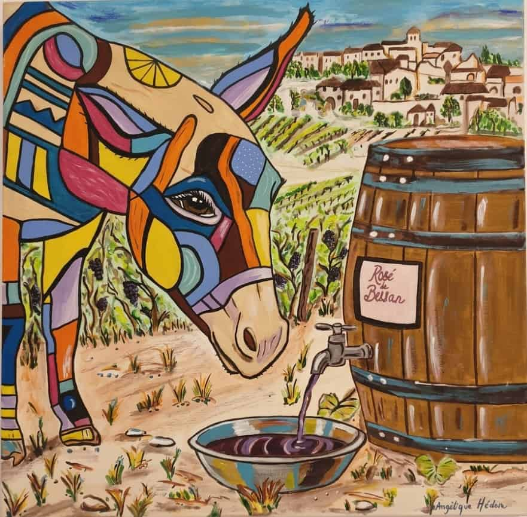

N° 27 · Collection 2026 · Âne & Vigne
Le Rosé de Bessan
Peinture acrylique sur toile · 2026
Un âne baisse le museau vers une bassine. Son corps est découpé en facettes orange, bleu, rose, jaune et turquoise, comme un vitrail. À droite, un tonneau cerclé laisse couler le vin par un robinet : l'étiquette porte Rosé de Bessan. Derrière, les rangs de vigne montent vers un village aux toits clairs. Une toile de terroir, de couleur et de soif.
Idéal pour
Cave · Salle à manger · Cuisine · Bar · Restaurant
Format50 × 50 cm
TechniqueAcrylique sur toile
Date2026
ÉditionŒuvre unique originale
CertificatCertificat d'authenticité inclus
Disponible
230
€
TTC
Emballage soigné · Certificat d'authenticité inclus
Commandes personnalisées disponibles — contactez-moi